Your real group
Use my group size shrinks the vital zone by the spread you've actually logged, so your point-blank range is one you can really hold to.
Pick your load and the animal you're after. Hunting Zero works out exactly how high to sight in at 100 yards so your bullet stays inside the vitals from the muzzle out to the longest distance it can. Inside that range there's no dialing, no holdover and no guessing. Just put the crosshair on the vitals and press the trigger.
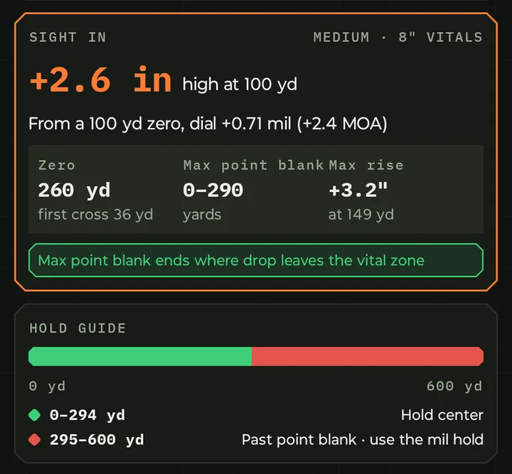
Hunting Zero runs the full ballistic solver on your actual bullet, BC, muzzle velocity and sight height, then hands you one number to set at the range: +2.6 in high at 100 yd. Alongside it you get the far zero, your maximum point-blank range and the highest the bullet will rise above your aim.
Already zeroed at 100? It also tells you exactly what to dial in mil and MOA, so you don't even have to re-zero.
Choose Medium game (deer, pronghorn, sheep) or Large game (elk, moose), and Hunting Zero sizes the vital zone for you. You can also type your own. Set My longest shot and it never plans past the distance you'd actually take.
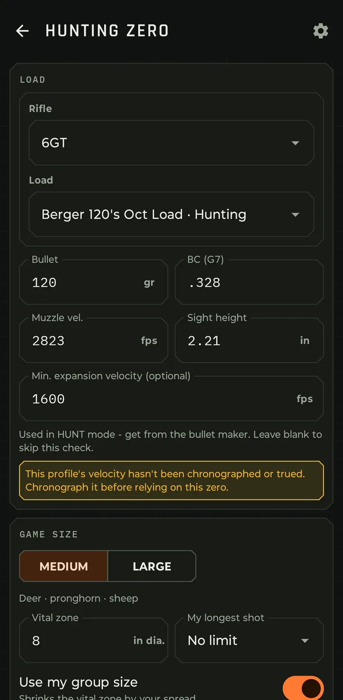
Bullet data comes from the load. Pick the game and the longest shot you'd take.
A color-coded hold guide and a trajectory chart show the bullet's path through the vital zone, with your zero and point-blank range marked.
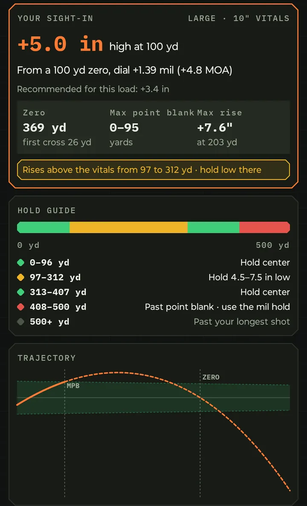
Where to hold center, where to hold low and where to dial.
The Inside 100 yd table confirms that a shot in the timber is still a center hold. Check at the range lists the exact impacts to expect at 100 to 400 yards, so you can confirm your zero with a few shots before opening day.
Happy with it? One tap saves it as its own hunting profile. Your original load and its 100 yd zero stay exactly as they are.
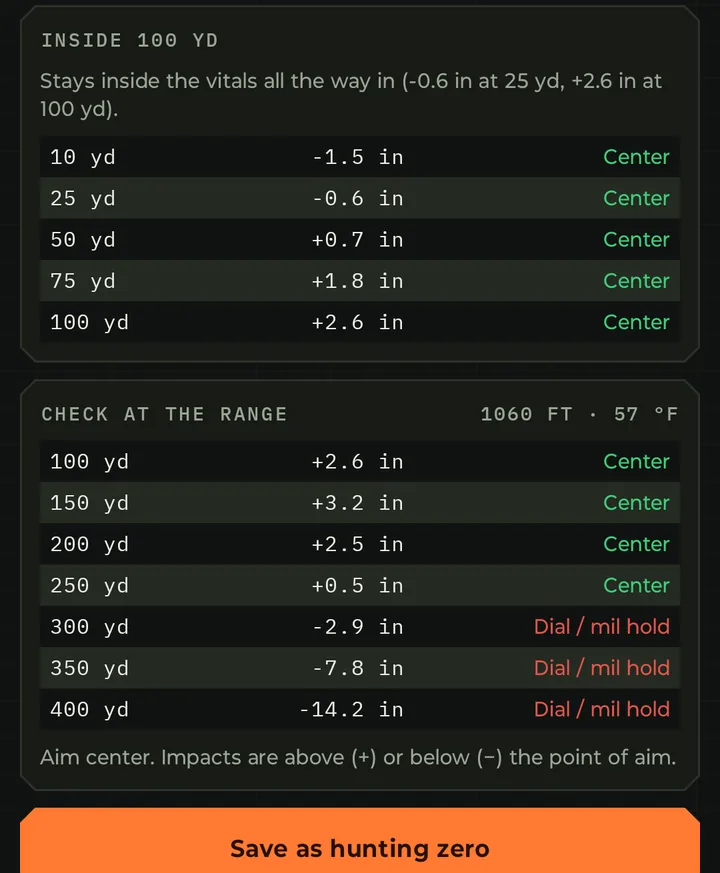
The impacts to expect, yard line by yard line.
"Three inches high at 100" has been passed down for generations. Is it right for your rifle? Switch to Custom and try it, along with +5.0, dead on at 100, or any height you like. Hunting Zero shows you exactly where each one works and where it doesn't.
Rises above the vitals from 97 to 312 yd · hold low there
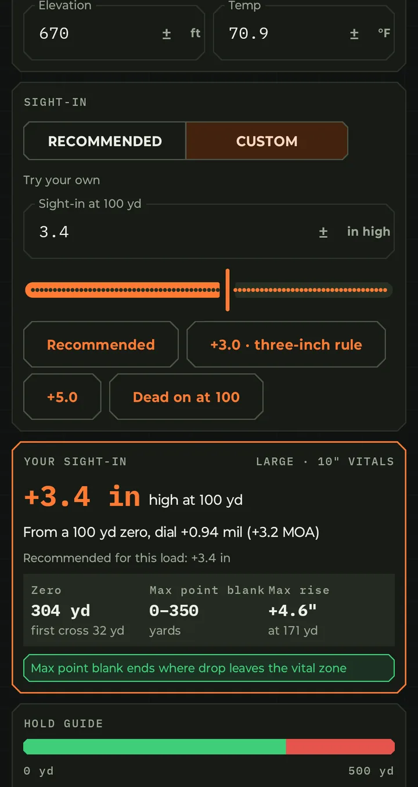
The three-inch rule, +5.0, dead on, or your own height.
Use my group size shrinks the vital zone by the spread you've actually logged, so your point-blank range is one you can really hold to.
Separate elevation and temperature for where you sight in and where you hunt. Thin mountain air shoots flatter, and your zero accounts for it.
It warns you when a load's velocity hasn't been chronographed or trued, and checks against your bullet's minimum expansion velocity.
Open Hunting Zero from its own tile on the Home screen, from the Hunting zero link on every load, or from the load's setup screen. Each load already shows its recommended hunting sight-in and point-blank range.
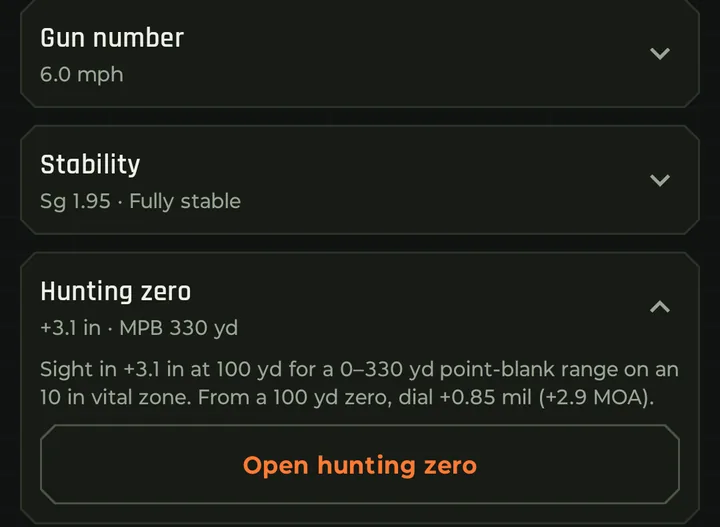
The recommended sight-in, right on the load.
Hunt Mode cuts the solver down to what matters with an animal in front of you: your elevation hold, your windage, and a straight answer on whether the shot is ethical. Point the phone at the animal, type the range, and read the hold.
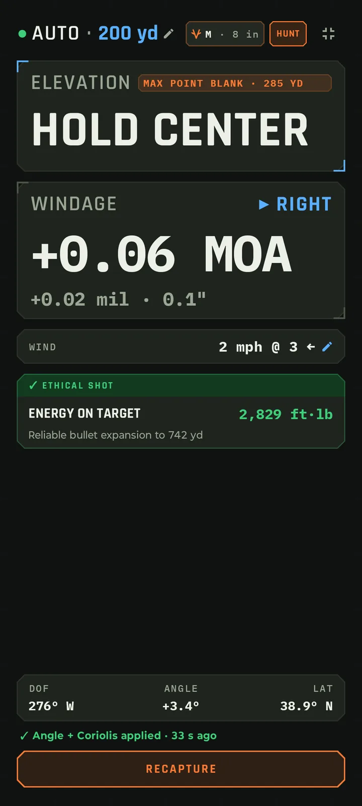
No menus and no typing beyond the yards. Hunt Mode reads the shot from the phone itself.
Tap Aim & Capture and hold steady. Hunt Mode records your direction of fire, the uphill or downhill angle, and your latitude for Coriolis.
The range keypad opens as soon as the capture finishes. Enter the yards from your rangefinder and tap Solve.
Elevation and windage come up big, with angle and Coriolis already in the numbers. If the animal moves or you change position, tap Recapture.
Set your game size once. Hunt Mode works out how far your bullet stays inside that animal's vital zone with the zero on your rifle. That distance is your max point blank, shown right on the elevation card.
When the range is inside it, the elevation readout simply says HOLD CENTER. Past it, you get the exact hold in MOA or mil, whichever you dial, with the other unit and inches underneath.
Windage is always shown, so you still know where the wind is pushing the bullet.
A bigger vital zone means a longer max point blank.
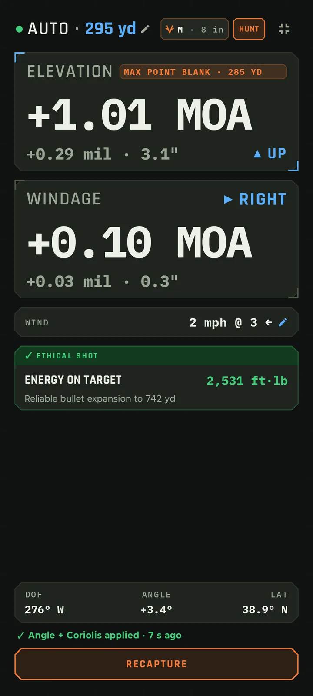
The deer is 10 yards past max point blank, so Hunt Mode gives the hold: +1.01 MOA up.
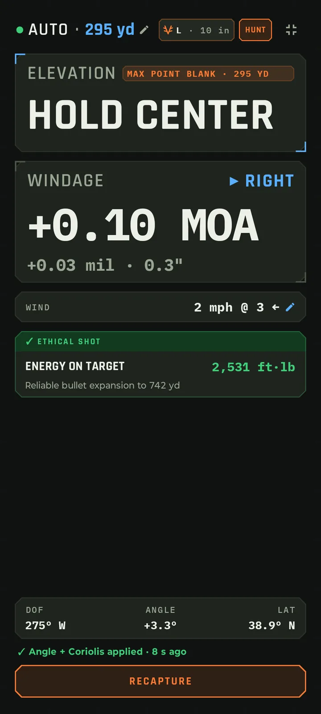
The 10 in vital zone carries this load to 295 yards. Hold center.
Hunt Mode remembers the last game size you picked, so it's ready next time you open it.
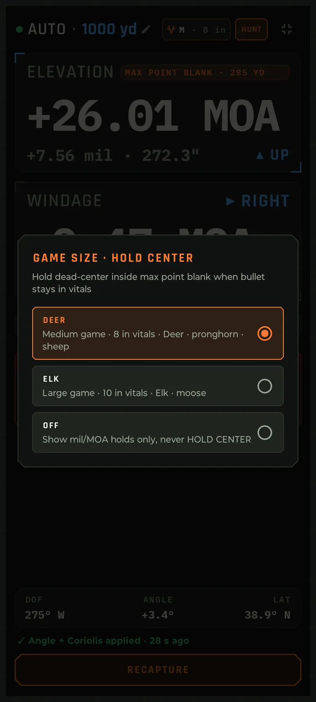
Deer, Elk or Off.
The max point blank printed on an ammo box assumes sea-level air, a generic zero and a perfect shooter. Hunt Mode works it out from your rifle, your zero and the air you're actually hunting in. Then it solves the real shot on top of that.
Your rifle in today's air. It holds steady as you glass from one animal to the next.
The shot in front of you, captured when you aim.
✓ Angle + Coriolis applied · shown on every Hunt Mode solve
A hold you can make isn't always a shot you should take. Hunt Mode runs two checks on every solve. If both pass, the card turns green and reads ETHICAL SHOT. If either fails, it turns red, reads TOO FAR, and tells you how many yards to close.
Impact energy must be above your minimum. It's 1,000 ft·lb by default, and you can change it in Settings.
Impact velocity must be at or above the bullet's minimum expansion velocity. Get it from the bullet maker and enter it on the load. Leave it blank and Hunt Mode skips this check.
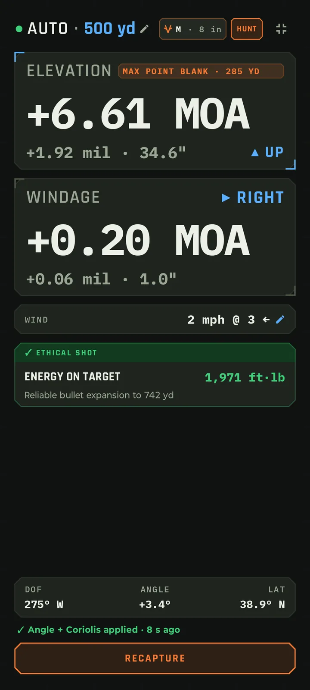
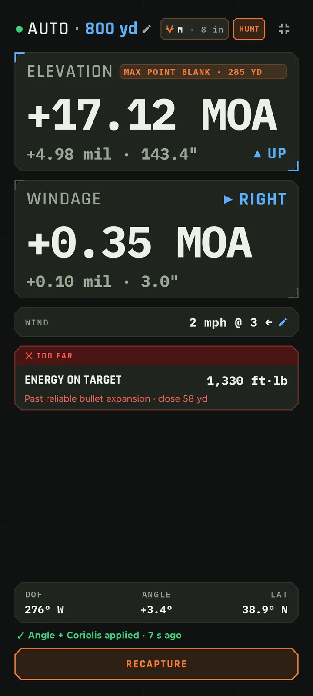
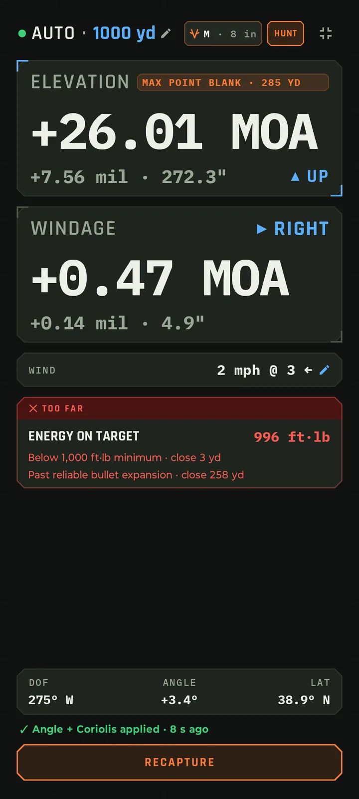
Minimum expansion velocity is set on the load, since it belongs to the bullet. Loads tagged Hunting open the solver in Hunt Mode automatically, and the mode box always shows TARGET or HUNT.
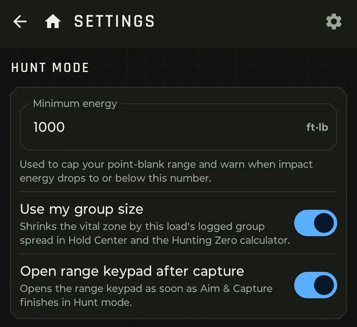
Minimum energy and two switches.
Target mode shows stats, hit probability and wind bands. Hunt Mode drops all of that. You get big holds, the wind, and a yes or no on the shot, readable at arm's length.
Hunt Mode helps you decide. Know your rifle, confirm your data at distance, and follow your local hunting regulations.
Screens are live solves from Bullseye Ballistics, using a 300 WM 200 gr ELD-X hand load, MOA dial-in.
Hunting Zero and Hunt Mode are in Bullseye Ballistics now.